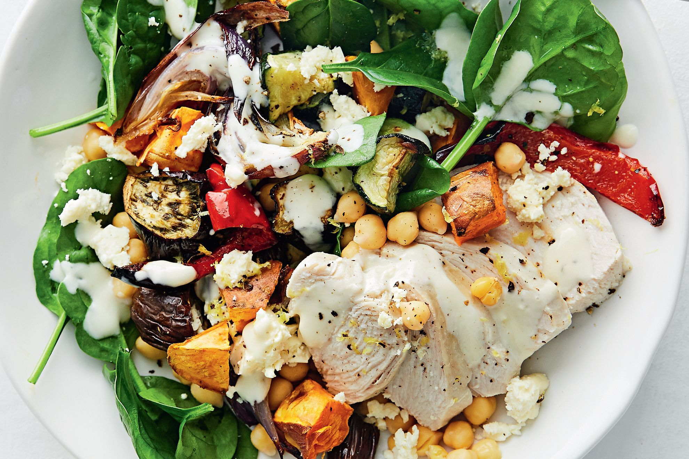

Creamy Chicken and Roast Vegetable salad

Description
This healthy lunch is low cal and packed with flavour. Plus, you can prep ingredients on Sunday, for an easy make-ahead lunch later in the week.
Ingredients
1 tbsp Greek-style yoghurt
1-2 tsp fresh lemon juice, to taste
1 tsp honey
45g (1/4 cup) canned chickpeas, rinsed, drained
10g baby spinach
20g feta, crumbled
1 tsp finely grated lemon rind
1 (about 400g) sweet potato, cut into 2cm pieces
2 (about 250g) Lebanese (slender) eggplants, coarsely chopped
1 small red onion, cut into wedges
1 small red capsicum, deseeded, cut into thick strips
1 zucchini, halved lengthways, coarsely chopped
1 tbsp olive oil
1 Massel Chicken Style Stock Cube
200g chicken breast
Steps
- Preheat the oven to 200C/180C fan forced. Grease 2 large baking trays. Line with baking paper. Spread sweet potato, eggplant, onion, capsicum and zucchini over prepared trays. Drizzle over the oil and season. Bake for 30 minutes or until tender. Set aside on trays to cool.
- Reserve 1 cup roasted vegetable for the salad (save the rest for other lunches, see note).
- Bring 750ml (3 cups) water to the boil in a saucepan. Add the stock cube and stir until dissolved. Add chicken. Reduce heat to low, cover and cook for 12-15 minutes or until just cooked through. Remove from the heat and set aside in the pan for 5 minutes. Transfer to a plate.
- Halve the poached chicken and reserve half for the salad (save the remaining half for other lunches, see note).
- Combine yoghurt, lemon juice and honey in a small bowl. Season.
- Combine chickpeas, spinach, feta and reserved roast vegetables and chicken on a serving plate. Toss to combine. Top with dressing and lemon rind.
Home